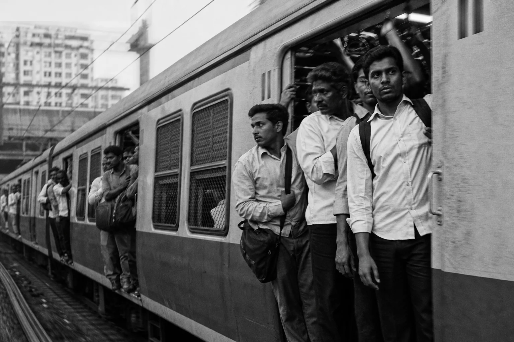
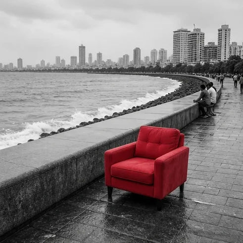
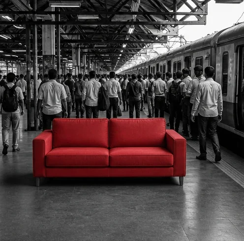
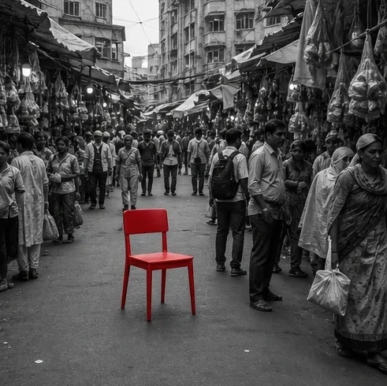
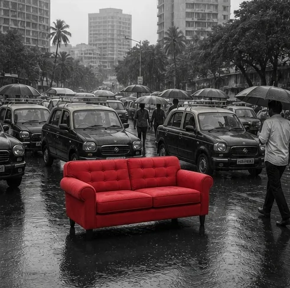
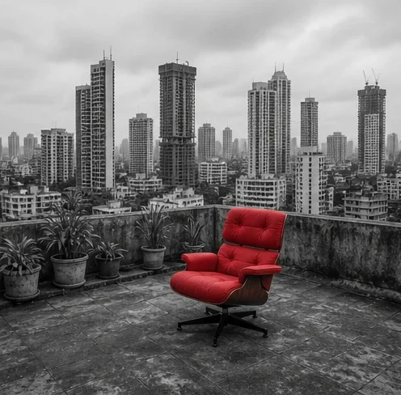
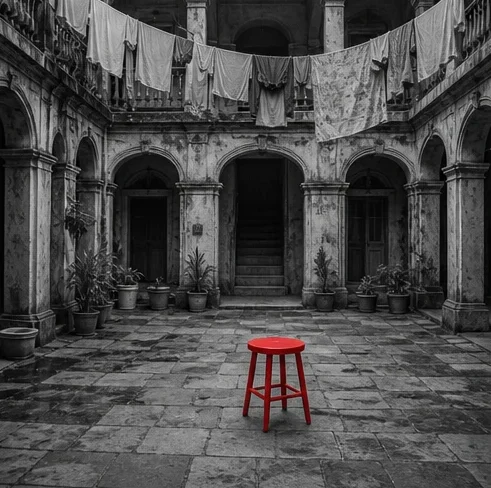

Stax Living
A furniture campaign where the colour only arrives when you get home.


The brief
Consistent social media posting, with themes and concepts for new furniture collections that use storytelling as a promotional tool.
The approach
Storytelling concepts built on human emotion. The day outside is black and white: the commute, the traffic, the noise of Bombay, routine without colour. Then you get home, and there is red. That is the furniture.
What I did
- Market research
- Creative direction
- Social media management
What came of itStax Living
42%Increase in enquiries for the collection
The campaign(06)Every frame stays grey until the furniture arrives.





